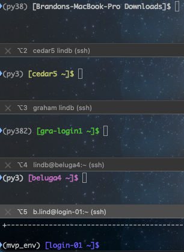

How to color code your terminal
Often when we use terminal, we’ll use ls to list the files in the current directory. It can be useful to have different types of files be colored different colors so you can more easily make sense of what is output.
In this tutorial, we’ll create a dummy folder and put some files with various suffixes. Then we’ll add the BASH code to color the files. You’ll have to set this up for each computer/server that you use.
Next, we’ll color code the prompt (the part that says the computer and folder at the beginning of the command line in terminal).
Color coding Files
Step 1. Create dummy folder and add some files
We want to create a dummy folder just to practice setting up the color coding, then you can delete the dummy folder later.
Let’s create a dummy folder in your home directory: mkdir ~/dummy
Then change to that directory: cd ~/dummy
Now let’s create some files:
touch dummy.txttouch dummy.outtouch dummy.Rtouch dummy.pytouch dummy.shtouch dummy.RDStouch dummy.md5touch dummy.tartouch dummy.png
Step 2. Set up BASH colors
The way BASH ‘knows’ what color to color-code the files is through an environmental variable called LS_COLORS. We show LS_COLORS to BASH by ‘export’-ing it like so:
export LS_COLORS="*RDS=01;35"
Now if you ls your dummy folder the RDS file should show up as purple. Note the asterisk, this tells BASH that any text can preceed the ‘RDS’ end of the file.
The pattern for file colors is pretty simple, the first number (eg 01) references whether or not to bold the color (01 is bold, 00 is non-bold). The second number is the color (35 is magenta). Here are some more colors for future reference:
- Black: 30 (note making black bold will be more of a gray color)
- Red: 31 (red is generally the default color for compressed files (eg .tar, .tar.gz
- Green: 32
- Yellow: 33
- Blue: 34 (note bold blue is generally the default color for folders, you may not want to set anything to this color)
- Magenta: 35
- Cyan: 36
- White: 37 (default for all files)
- Gray: 90
- Light red: 91
- Light green: 92
- Light yello: 93 Light yellow
- Light blue: 94
- Light magenta: 95
- Light cyan: 96
When you want to have LS_COLORS handle multiple file colors, you separate each of the bits with a colon (:). So if we wanted any file that ends with ‘out’ to be gray but keep the RDS we do this:
export LS_COLORS="*RDS=01;35:*out=01;30"
Now if you ls the directory the RDS and .out files will be colored. Here is the export I use:
export LS_COLORS="rs=0:di=01;34:ln=01;36:mh=00:pi=40;33:so=00;35:do=00;35:bd=40;33;01:cd=40;33;01:or=40;31;01:mi=01;05;37;41:su=37;41:sg=30;43:ca=30;41:tw=30;42:ow=34;42:st=37;44:ex=01;32:*.tar=01;31:*.tgz=01;31:*.arc=01;31:*.arj=01;31:*.taz=01;31:*.lha=01;31:*.lz4=01;31:*.lzh=01;31:*.lzma=01;31:*.tlz=01;31:*.txz=01;31:*.tzo=01;31:*.t7z=01;31:*.zip=01;31:*.z=01;31:*.Z=01;31:*.dz=01;31:*.gz=01;31:*.lrz=01;31:*.lz=01;31:*.lzo=01;31:*.xz=01;31:*.bz2=01;31:*.bz=01;31:*.tbz=01;31:*.tbz2=01;31:*.tz=01;31:*.deb=01;31:*.rpm=01;31:*.jar=01;31:*.war=01;31:*.ear=01;31:*.sar=01;31:*.rar=01;31:*.alz=01;31:*.ace=01;31:*.zoo=01;31:*.cpio=01;31:*.7z=01;31:*.rz=01;31:*.cab=01;31:*.jpg=00;35:*.jpeg=00;35:*.gif=00;35:*.bmp=00;35:*.pbm=00;35:*.pgm=00;35:*.ppm=00;35:*.tga=00;35:*.xbm=00;35:*.xpm=00;35:*.tif=00;35:*.tiff=00;35:*.png=00;35:*.svg=00;35:*.svgz=00;35:*.mng=00;35:*.pcx=00;35:*.mov=00;35:*.mpg=00;35:*.mpeg=00;35:*.m2v=00;35:*.mkv=00;35:*.webm=00;35:*.ogm=00;35:*.mp4=00;35:*.m4v=00;35:*.mp4v=00;35:*.vob=00;35:*.qt=00;35:*.nuv=00;35:*.wmv=00;35:*.asf=00;35:*.rm=00;35:*.rmvb=00;35:*.flc=00;35:*.avi=00;35:*.fli=00;35:*.flv=00;35:*.gl=00;35:*.dl=00;35:*.xcf=00;35:*.xwd=00;35:*.yuv=00;35:*.cgm=00;35:*.emf=00;35:*.axv=00;35:*.anx=00;35:*.ogv=00;35:*.ogx=00;35:*.aac=01;36:*.au=01;36:*.flac=01;36:*.mid=01;36:*.midi=01;36:*.mka=01;36:*.mp3=01;36:*.mpc=01;36:*.ogg=01;36:*.ra=01;36:*.wav=01;36:*.axa=01;36:*.oga=01;36:*.spx=01;36:*.xspf=01;36:*pkl=01;35:*R=00;32:*py=00;32:*sh=00;32:*out=01;30:*md5=01;36:*RDS=01;35"
If you want to have these colors show up every time you start a new terminal session, you can put them in your bashrc file that is sourced each time you open a new session (i.e., open a new terminal window or ssh).
To edit the bashrc file do this: vim ~/.bashrc. If you scroll you should see a section that says something like “# User specific aliases and functions”, add the export command below this line: hit i to insert text and the normal paste command (command + v on a mac). Then to “write + quit” to save the file first hit esc then :wq (note colon) and then hit enter. You’ll need to start a new terminal session or source ~/.bashrc for the export command to be executed.
You will also need to add this command to your .bashrc to show colors: alias ls="ls --color=always". This will make it so that whenever you do ls, the full command ls --color=always is executed instead.
Color coding terminal prompt
It’s useful to color code this prompt (see below) so that it’s easy to tell which computer/server you’re working on. This part of the prompt has the environmental name PS1. For instance, I color code my personal computer’s PS1 as bold white, and several other servers different colors so that I can quickly know where I am. (ignore the “(py3)” “(mvp_env)” etc before the color coding, that’s just my anaconda environment)

As above with LS_COLORS we can use bold/unbold and the color of our choice. For instance, here is my PS1 for the discovery cluster. This will display the hostname of the computer/server (\h) and the basename of the current working directory (\W) in bold blue (01;34m) that ends in a dollar sign $:
export PS1='\[\e[01;34m\][\h \W]\$\[\e[0m\] '
There are other variables like \h or \W you can add, like the current time with AM/PM (\@) the full path to the current working directory (\w), and others. Just google “bash PS1” and you’ll find some other examples.
As with LS_COLORS if you want this to export every time you connect to the host, put the export command in your ~/.bashrc.